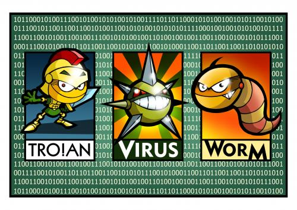

Computer viruses are a harmful piece of software commonly found online. There are many types of computer viruses that can get to you in many ways. You should never click on pop-ups or respond to spam at the risk of getting infected by one of these viruses. The first computer virus was written in 1971, just as a prank, but now viruses are a much more serious problem and can do many bad things to your computer. Thankfully, there are ways to protect yourself from these types of malware.
There are many types of computer viruses, but the most commonly known ones are trojans, viruses, and worms. Worms are very similar to viruses, so they are sometimes referred to as viruses. Both viruses and worms are programs that recreate functional copies of themselves, and they can sometimes duplicate so much that they will bring down your computer. On the other hand, trojan horses are undocumented programs that have many purposes as programs that run in the brackground, unknown to the user. For example, one common tojan is a keylogger that records everything that the user types. These can be later viewed to possibly find passwords or credit card numbers.
Many bad things can happen to your data and information if you get a computer virus. Some things that could happen to your computer if you get a virus include performance failures and random crashes. You should immediately get some form of computer virus protection if this happens to you. Although many computers come preinstalled with virus protection, if you don't have it on your computer, you should get some virus protection ASAP so you may recover some of your data and eraticate the virus. Another way to protect you data if you have something important on your computer is encryption. By encrypting a file, you basically lock it down and scramble its data, and you can only decrypt it with a key set during the encryption. A virus can't get through the encryption and decrypt it, so any files you encrypt prior to getting a virus will remain untouched by the virus. If you still remain with a virus even with a virus protection program, one final way to recover a partial amount of your data is by taking it to a repair store. This can be very expensive at times and this may only recover a small portion of your data, but it can still work.